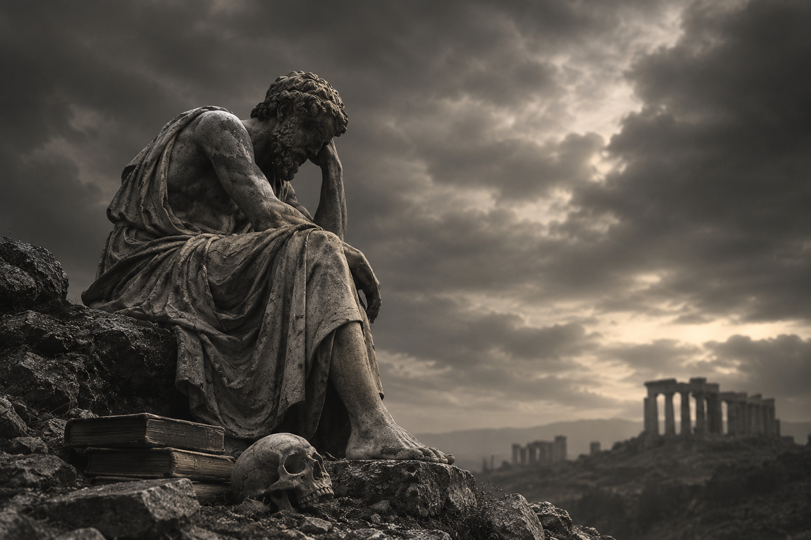
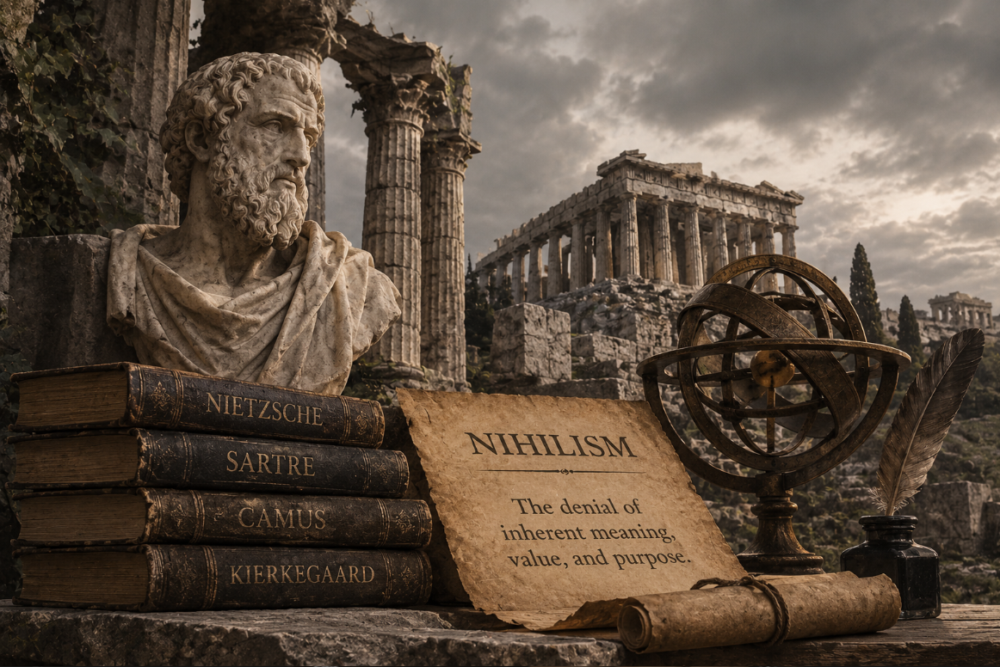

What Is Nihilism?

Nihilism is a philosophical position that questions or denies the existence of objective meaning, value, knowledge, or certain foundations of reality. Rather than accepting that life has an inherent purpose, that moral principles are universally true, or that human knowledge rests on unquestionable foundations, nihilism examines whether such beliefs can actually be justified. It is not a single doctrine with one fixed conclusion, but a family of philosophical positions concerned with different aspects of human existence and understanding. Existential nihilism, for example, denies that life possesses an objective meaning or purpose; moral nihilism challenges the existence of objective moral facts; epistemological nihilism questions the possibility or foundations of knowledge; and metaphysical forms reject certain claims about what exists.A These positions differ in what they reject, but each examines assumptions that are often treated as fundamental to human understanding of the world.[1] [2]
The significance of nihilism becomes clearer when we consider how much of human life depends on the belief that certain things possess meaning, authority, or lasting value. People inherit moral principles, religious convictions, social traditions, and ideas about purpose, often accepting them as foundations that need little examination. Nihilistic thought brings these foundations into question. What happens when a person can no longer find a convincing basis for the values they once accepted? Does the absence of objective meaning make life meaningless, or does it change how meaning should be understood? These questions have given nihilism a place in debates about ethics, epistemology, and metaphysics. The term also has a distinct historical dimension, from the Russian nihilist movement of the nineteenth century to Friedrich Nietzsche's examination of the decline of traditional values in European culture. His engagement with nihilism raises questions that remain central to later philosophical criticisms and discussions of the influence of nihilism on modern thought. [5]
History and Etymology of Nihilism

Also read: Explore more history History of philosophy traces how thinkers and philosophical traditions have explored questions about reality, knowledge, morality, and human existence across different periods and cultures. Read article →
The history of nihilism has two closely connected dimensions: the development of the word itself and the much older philosophical questions that eventually came to be associated with it. The term emerged in European intellectual debates around the end of the eighteenth century and became increasingly prominent during the nineteenth. Yet the problems it describes had occupied philosophers long before anyone called them nihilistic. Questions about whether existence has an ultimate purpose, whether moral values possess authority independent of human beliefs, and whether knowledge can ever reach certainty appear in different philosophical traditions across history. What makes the history of nihilism particularly complicated is that the term was never restricted to one doctrine. It was used to describe different philosophical arguments, political attitudes, and perceived threats to established beliefs. Sometimes it was adopted by critics to condemn an opponent's position rather than used by thinkers to describe their own philosophy. Understanding its history therefore requires looking at the context in which the term appeared and the particular assumptions it was being used to challenge.[1][3][4]
Etymology and Terminology
The word nihilism comes from the Latin nihil, meaning "nothing," with the suffix -ism marking a doctrine or attitude. Its German form, Nihilismus, and the Russian nigilizm developed within different intellectual and cultural settings. Although its literal meaning suggests a philosophy concerned with nothingness, the term has never referred exclusively to the belief that nothing exists. Its meaning depends on what is being rejected: objective moral values, inherent meaning, reliable knowledge, religious foundations, or established social and political institutions. Dictionary histories record an early political sense involving the rejection of fundamental social and political structures in the 1820s, associated with the German writer Joseph von Görres, followed by a philosophical sense connected with extreme skepticism during the 1830s.[27] Over time, the word acquired meanings that extended beyond its original philosophical setting. It became associated with challenges to religious authority, traditional morality, established institutions, and the foundations on which people understood their lives. These different uses explain why nihilism can sometimes appear to describe contradictory positions. A philosopher questioning the possibility of objective knowledge, a political movement rejecting inherited institutions, and a thinker examining the loss of religious values may all be described as nihilistic, even though their arguments and intentions are not the same. For this reason, it is important to identify the particular meaning of the term rather than treating every form of rejection as the same philosophical position.[3][4]
Early Precursors
Long before the word nihilism entered philosophical vocabulary, ancient thinkers were already examining questions about existence, knowledge, and the limits of human understanding that later discussions of nihilism would revisit. One frequently discussed example is the Greek sophist Gorgias, who is credited in later reports with three striking theses in a work known as On Not-Being: that nothing exists, that if anything did exist it could not be known, and that if it could be known it could not be communicated.[20]B Taken at face value, these claims appear to challenge the very possibility of establishing anything about reality or communicating truth to another person. However, the interpretation of Gorgias's argument remains a matter of scholarly discussion, and it should not automatically be treated as an expression of modern nihilism. His surviving arguments are known largely through later accounts, and their purpose may have been to expose difficulties in the relationship between being, thought, and language. Pyrrhonian skepticism approached the problem from a different direction. Rather than asserting that knowledge is impossible or that reality does not exist, Pyrrhonian skeptics advocated suspending judgment when competing arguments appeared equally persuasive. This distinction matters because questioning whether something can be known is not necessarily the same as denying that it exists or that knowledge is possible. A related debate appears in Indian philosophy through Nagarjuna's Madhyamaka philosophy. Its central teaching of emptiness (śūnyatā) holds that things do not possess independent, inherent existence; they arise through causes, conditions, and relationships. Some critics have interpreted this position as nihilistic because it rejects inherent existence. However, Nagarjuna's philosophy is generally understood as an attempt to avoid both eternalism, which treats things as possessing fixed and independent existence, and annihilationism, which reduces reality to absolute non-existence. Emptiness does not mean that nothing exists or that ordinary experience is meaningless. Rather, it challenges the assumption that things exist independently of the conditions that make them possible.[28]C
Jacobi and the Origins of the Term
The emergence of nihilism as a distinct philosophical term is closely associated with the German philosopher Friedrich Heinrich Jacobi. In 1799, Jacobi used the word in an open letter addressed to Johann Gottlieb Fichte, criticizing what he regarded as the consequences of Fichte's idealist philosophy. Jacobi was concerned that a system attempting to derive reality entirely through the activity of the thinking subject would leave no secure place for an independent world beyond consciousness. If everything that could be known were reduced to the structures or activity of thought, then the reality of external things, other beings, and even God would lose the independent foundation Jacobi believed they possessed. He saw this as a dangerous consequence of a philosophy that attempted to establish everything through rational demonstration while setting aside immediate certainty and faith.[11][3] For Jacobi, this was not simply an abstract disagreement about philosophical method. It raised a deeper question about whether reason, when treated as the sole foundation of knowledge, could ultimately undermine the very reality it was supposed to explain. His criticism gave nihilism an important place in debates about German idealism, rationalism, and the relationship between thought and existence. The term subsequently faded from prominent philosophical discussion for several decades before reappearing in a very different intellectual and political setting during nineteenth-century Russia.
Russian Nihilism
Also read: Explore Russian Nihilism Russian Nihilism was a radical intellectual movement of nineteenth-century Russia that challenged autocracy, religious authority, inherited social hierarchies, and traditional values. Explore its origins, major figures, literature, and influence on modern understandings of nihilism. Read article →
The word entered wide circulation through Ivan Turgenev's novel Fathers and Sons (1862), whose young hero Bazarov calls himself a nihilist: someone who bows to no authority and accepts no principle on faith alone.[12] The label was taken up by radicals of the 1860s, among them the critic Dmitry Pisarev, and by readers of Nikolai Chernyshevsky's novel What Is to Be Done? (1863). Russian nihilism in this sense was a movement of radical criticism aimed at autocracy, religious authority, inherited social hierarchy, and traditional aesthetic standards. Its adherents typically valued science, utility, and social reform, so they did not believe in "nothing" in any literal sense.[4]
Dostoevsky's Demons (1871–72) offered a hostile and influential portrait of radical nihilism and its violent potential, and it shaped how much of Europe imagined the movementD.[25] Interest in nihilism then widened in the twentieth century in response to Nietzsche's writings, and the term's meaning expanded to cover a broad range of philosophical and cultural questions.[3]
Timeline of Nihilism: Key Dates and Events
Gorgias is reported to have argued in On Not-Being that nothing exists, that it could not be known if it did, and that it could not be communicated. Scholars still debate how seriously the argument was meant.[20]
Nagarjuna develops the Madhyamaka philosophy of emptiness, later accused of nihilism by critics but presented by its defenders as a middle way.[28]
F. H. Jacobi writes an open letter to Fichte that gives "nihilism" its first major philosophical use.[11]
Schopenhauer publishes The World as Will and Representation, a pessimistic account of existence that later influenced Nietzsche's thinking about the value of life.[29]
Turgenev publishes Fathers and Sons, introducing the nihilist Bazarov and popularizing the word across Europe.[12]
Dostoevsky serializes Demons, a dark portrait of radical nihilism and its consequences.[25]
Tsar Alexander II is assassinated by members of the revolutionary group Narodnaya Volya, an event often linked in popular accounts to Russian "nihilism," though historians distinguish the 1860s nihilists from later revolutionary groups.[4]D
Nietzsche publishes The Gay Science, in which the "death of God" appears, most famously in the parable of the madman.[7]
Nietzsche publishes Thus Spoke Zarathustra, which develops themes of self-overcoming and the affirmation of life against nihilistic despair.[6]
Nietzsche's notebooks discuss nihilism at length, including the distinction between active and passive nihilism. They were later compiled posthumously as The Will to Power.[8]
Heidegger lectures on Nietzsche and interprets nihilism as the underlying history of Western metaphysics; the lectures were published in 1961.[10]
Camus publishes The Myth of Sisyphus (1942) and Sartre publishes Existentialism Is a Humanism (1946), two influential responses to the problem of meaning in a world without guaranteed foundations.[18][19]
Thomas Nagel publishes "The Absurd," an influential analytic treatment of why life may seem absurd and how one might respond to it.[17]
J. L. Mackie publishes Ethics: Inventing Right and Wrong, defending the error theory, the best-known philosophical form of moral nihilism.[13]
Donald Crosby publishes The Specter of the Absurd, a major study that distinguishes moral, epistemological, cosmic, and existential nihilism.[5]
Richard Joyce publishes The Myth of Morality, which develops moral fictionalism as a response to the error theory.[14]
Major Thinkers and Writers Associated with Nihilism
Also read: Explore more thinkers Philosophical thinkers are the individuals whose ideas have shaped the study of reality, knowledge, ethics, politics, and human existence across different cultures and periods. Read article →
The history of nihilism is closely connected to thinkers who questioned the foundations on which people understand existence, morality, and human purpose. Some confronted the possibility that nothing possesses inherent meaning or objective value, while others examined the consequences of losing traditional beliefs or challenged nihilistic conclusions themselves. Their contributions are not identical, and not everyone associated with nihilism can be considered its advocate. Some helped introduce the concept, others explored its cultural and psychological consequences, and several sought philosophical ways beyond it. Together, their ideas reveal how the debate over nihilism developed across different periods, from ancient questions about existence and knowledge to modern discussions of meaning, morality, and the human condition.[1][4]
| Thinker | Period | Connection to Nihilism |
|---|---|---|
| Gorgias | c. 483–375 BCE | Reported author of On Not-Being, arguing that nothing exists, cannot be known, and cannot be communicated. Often cited as an ancient precursor, though how seriously the arguments were meant is debated.[20] |
| F. H. Jacobi | 1743–1819 | Gave "nihilism" its first major philosophical use in his 1799 letter to Fichte, applying it to idealist philosophy that he thought dissolved reality into the thinking self.[11] |
| Arthur Schopenhauer | 1788–1860 | A philosophical pessimist who saw the world as the expression of a blind will. He is not a nihilist in the strict sense, but Nietzsche later diagnosed tendencies in his thought as life-denying.[29][6] |
| Ivan Turgenev | 1818–1883 | Russian novelist whose Fathers and Sons and the character Bazarov popularized the word "nihilist."[12] |
| Fyodor Dostoevsky | 1821–1881 | Portrayed radical nihilism and its psychological and political consequences in his novels, shaping later discussions, including Nietzsche's.[25][4] |
| Friedrich Nietzsche | 1844–1900 | Analyzed nihilism as the cultural crisis that follows the "death of God" and sought ways to overcome it. Best understood as its diagnostician, not simply its advocate.[6][8] |
| Martin Heidegger | 1889–1976 | Interpreted nihilism as the underlying history of Western metaphysics, in which Being itself is forgotten.[10] |
| Jean-Paul Sartre | 1905–1980 | Existentialist who argued that human beings must create meaning through free choice instead of finding it ready made.[19] |
| Albert Camus | 1913–1960 | Analyzed the absurd, the clash between the human search for meaning and a silent world, while rejecting nihilism and advocating revolt.[18] |
| J. L. Mackie | 1917–1981 | Defended the error theory, holding that moral claims presuppose objective values that do not exist.[13] |
| Richard Joyce | Contemporary | Develops moral fictionalism, which allows moral language to be kept as a useful fiction even if its claims are not literally true.[14] |
Ethics
Also read: Explore ethics Ethics is the branch of philosophy concerned with questions of right and wrong, good and evil, virtue, duty, and how we ought to live and act. Read article →
Ethics is one of the areas where nihilism poses some of its most fundamental questions. Rather than taking moral values for granted, nihilism asks whether concepts such as right and wrong, good and evil, duty, and obligation have any objective foundation at all. If moral values are not independent truths, then the authority of moral rules may depend instead on human beliefs, emotions, social conventions, or particular ways of understanding the world. This makes nihilism more than a rejection of individual moral rules: it is a challenge to the idea that morality itself necessarily rests on objective facts.
In ethics, nihilism is mainly a view about value and obligation. It asks whether anything is objectively good, bad, right, or wrong, and whether life itself has a value or purpose that does not depend on human attitudes. Two forms are central: moral nihilism, which concerns moral facts, and existential nihilism, which concerns the meaning of life. Political nihilism, the rejection of established social and political institutions, is also treated here because it concerns the authority of the values that structure social life.[1][15]
Moral Nihilism
Moral nihilism, also called ethical nihilism or amoralism, is the view that nothing is objectively morally right or wrong. The best-known philosophical version is the error theory defended by J. L. Mackie. He argued that ordinary moral thought and language claim that there are objective, action-guiding moral facts, but that no such facts exist, so positive moral claims are systematically false. He supported this with the argument from relativity, which points to the wide variation in moral codes, and the argument from queerness, which holds that objective moral properties would be metaphysically and epistemologically strange.[13]E
Richard Joyce has defended a related position, moral fictionalism, according to which people may keep using moral language as a useful fiction even though its claims are not literally true.[14] Moral nihilism does not imply that people must stop caring about others or abandon moral vocabulary. It is also distinct from moral relativism, which holds that moral claims can be true or false relative to a culture or individual, and from the mere fact of moral disagreement, which does not by itself show that there are no moral truths. Critics come mainly from moral realists, who defend the existence of objective moral facts.[15]
Existential Nihilism
Existential nihilism is the view that life has no objective, inherent, or ultimate meaning, purpose, or value. It is the form most people have in mind in everyday usage, and it is tied to the question of whether meaning must come from outside human life, for example from God or a cosmic purpose, or whether it can arise from human activity.[1][16] In contemporary discussions of the meaning of life, nihilism is usually contrasted with supernaturalist views, which locate meaning in a spiritual realm, and naturalist views, which locate it in the natural world. The nihilist holds that nothing confers meaning at all.[16]
An important distinction separates the claim that life lacks objective meaning from the claim that nothing can matter to anyone. Thomas Nagel argued in "The Absurd" that absurdity arises because people take their lives seriously while being able to step back and see that this seriousness cannot be justified from a wider perspective. He suggested that irony, rather than despair or heroic defiance, is the fitting response.[17]
Political Nihilism
Political nihilism refers to a radical rejection of established political, social, and religious institutions, particularly when those institutions are regarded as resting on unjustified authority or inherited traditions. The term is closely associated with nineteenth-century Russia, where it became connected with radical intellectual movements that challenged autocracy, religion, traditional morality, and established social structures.[4] Yet political nihilism does not necessarily mean that every value or form of social organization is rejected. A person may oppose existing institutions because they are believed to be oppressive or unjust while still defending alternative ideals such as freedom, equality, or social transformation. This distinction is important because "nihilism" was also frequently used as a hostile label for political and cultural opponents, giving the term a broader and sometimes misleading meaning in nineteenth-century debates.[1]
Epistemology
Also read: Explore epistemology Epistemology is the branch of philosophy concerned with the nature, sources, and limits of knowledge, belief, and justification. Read article →
Epistemology is where nihilism turns its attention from questions of value to the possibility of knowing anything at all. Instead of asking whether something is good or bad, epistemological nihilism asks whether human beings can possess knowledge, whether beliefs can be genuinely justified, and whether truth is attainable in the first place. This makes it an especially radical position: ordinary inquiry assumes that at least some beliefs can be supported by evidence or reason, whereas nihilism challenges the foundations on which such judgments depend. It is therefore important to distinguish epistemological nihilism from skepticism and relativism. Both raise serious questions about knowledge and truth, but neither necessarily entails the stronger conclusion that knowledge is impossible.[1][2]
Epistemological Nihilism
Epistemological nihilism is the view that knowledge is impossible, or, in stronger formulations, that no belief can be genuinely justified or established as true in the relevant sense. The position can therefore target different parts of the epistemological project: some versions question whether truth can be reached, while others challenge whether justification can ever provide a sufficient basis for calling something knowledge. Donald Crosby describes nihilism in terms of the negation of truth or meaning within a given domain, placing the position at the extreme end of philosophical doubt.[5]
In its strongest form, however, epistemological nihilism creates an immediate philosophical difficulty. If someone claims that "nothing can be known," the claim itself appears to be presented as knowledge. This creates a problem of self-reference or self-undermining: the argument seems to require confidence in precisely the kind of knowledge it denies. For this reason, epistemological nihilism is rarely defended as a simple everyday doctrine. It is more useful as a limiting position that exposes how much ordinary claims to knowledge depend on assumptions about evidence, justification, perception, reason, and truth. The problem of self-refutation is therefore one of the central objections to the view (see Criticisms).
Skepticism and Nihilism
Skepticism is closely related to epistemological nihilism because both question whether human beings can know things with sufficient certainty. The crucial difference, however, is the strength of the conclusion. Skepticism may question whether a particular claim is justified, whether certainty is possible, or whether our evidence is adequate, without concluding that knowledge as such is impossible. A skeptic can therefore suspend judgment when the available reasons are insufficient. Nihilism, in its stronger epistemological form, goes further by denying that knowledge can be attained at all.
This distinction can be seen clearly in ancient Pyrrhonian skepticism. As Sextus Empiricus presents the Pyrrhonian position, the skeptic suspends assent rather than affirming a final conclusion that knowledge is impossible. That makes skepticism a method of withholding judgment rather than necessarily a doctrine of total ignorance.[20] Later philosophical skepticism takes other forms. David Hume, for example, questioned the rational foundations of several assumptions about causation, induction, and human reasoning, but his skepticism should not simply be equated with the claim that people know nothing. Likewise, René Descartes used radical doubt as a methodological tool: his purpose was to discover a secure foundation for knowledge rather than to establish that knowledge is impossible.[2]
Relativism and Nihilism
Relativism presents another position that is often confused with nihilism. A relativist holds that truth, knowledge, or moral correctness may depend upon a particular framework, culture, perspective, conceptual scheme, or individual standpoint. This does not necessarily eliminate truth or value; instead, it changes the conditions under which a claim counts as true, justified, or correct. Nihilism, by contrast, is generally associated with the stronger denial that the relevant kind of truth, value, or knowledge exists at all. A relativist might therefore say that a belief is true relative to a particular framework, while a nihilist might deny that there is any underlying truth of the relevant kind to establish.[1][15]
Nietzsche's perspectivism is particularly important in this discussion. The idea that human knowing is always situated within a perspective can appear to support relativism or nihilism, but interpreting Nietzsche in either way without qualification is misleading. Perspectivism can be read as a criticism of the idea that knowledge comes from a completely neutral, perspective-free standpoint, rather than as the claim that every belief is equally true or that truth does not exist.[6] Similar interpretive disputes surround Michel Foucault and Jacques Derrida. Critics have sometimes accused both thinkers of collapsing truth into relativism or nihilism, while their defenders and many interpreters argue that their positions are more concerned with the historical, linguistic, and conceptual conditions under which claims to truth are produced and understood. The distinction matters because questioning the foundations or limits of knowledge is not automatically the same as denying knowledge altogether.
Metaphysics
Also read: Explore metaphysics Metaphysics is the branch of philosophy concerned with the nature of reality, including existence, causation, time, and the fundamental structure of the world. Read article →
Metaphysics asks some of philosophy's most basic questions: what exists, what kinds of things are real, what makes something the thing that it is, and whether reality could have been fundamentally different from the way it is. Nihilism enters this discussion in a more technical sense than it does when people speak about the meaninglessness of life. Metaphysical nihilism, for example, concerns the possibility that there could have been no concrete objects at all, while mereological nihilism questions whether ordinary objects such as tables, chairs, and people are genuinely fundamental features of reality. These positions therefore concern the structure and inventory of reality rather than simply whether human existence has meaning. Although the different uses of the word "nihilism" can sound related, metaphysical nihilism is largely independent of philosophical discussions of nothingness and of existential nihilism's claims about the meaning of life.[1]
Metaphysical Nihilism
In contemporary analytic metaphysics, metaphysical nihilism is the thesis that there might have been nothing: that there is a possible world containing no concrete objects. The important point is that this is a claim about possibility, not a claim that the actual world is empty. Our world plainly contains people, planets, physical objects, and other entities; the metaphysical nihilist instead asks whether the existence of anything at all is necessary, or whether reality could have been completely absent. This makes the position a question about the modal structure of reality and about what, if anything, must exist.[23] [24]
One influential route to this conclusion is the subtraction argument. Roughly speaking, the argument asks whether it is possible to begin with a world containing concrete objects and successively subtract those objects without being forced to retain any particular one. If every object could be removed while the resulting state remained metaphysically possible, the final result would be a world containing nothing concrete. Thomas Baldwin developed an influential version of this line of reasoning, while E. J. Lowe raised important objections to the assumptions involved in the argument.[23][24] The debate therefore turns not simply on whether we can imagine "nothing," but on whether a genuinely empty possible world is coherent and what that would imply about existence, necessity, and the fundamental structure of reality.
Mereological Nihilism
Mereological nihilism addresses a different metaphysical question: whether composite objects exist at all. The position holds that reality ultimately contains only simple objects, entities that do not themselves have proper parts. If this view is correct, an ordinary object such as a table is not a fundamental thing over and above the simpler entities arranged in a table-like way. The same reasoning can be applied to chairs, stones, trees, or even living organisms. Ordinary language would still allow us to speak about tables and chairs, but such objects would not appear in the most fundamental inventory of reality. This makes mereological nihilism a direct challenge to the assumption that the everyday world of objects corresponds neatly to the fundamental structure of existence.
Peter Unger defended a version of mereological nihilism in "I Do Not Exist" (1979), drawing on problems involving vagueness and the difficulty of identifying precise boundaries between objects. Theodore Sider's "Against Parthood" later provided another major challenge to the idea that parthood should be treated as a fundamental feature of reality.[22][21]F The debate is closely connected with broader questions in metaphysics about identity, composition, parts and wholes, and what should count as fundamental. Mereological nihilism should therefore not be confused with the claim that nothing exists; it is a claim about what kinds of things exist.
Cosmic Nihilism
Donald Crosby uses the term cosmic nihilism for a position in which the cosmos or nature is denied the kind of intelligibility, order, or value that would make human beings feel fundamentally at home in it.[5] The idea is often associated with the picture of an indifferent universe: nature does not appear to have human purposes built into it, and the universe does not necessarily provide an objective justification for human hopes, values, or aspirations. This gives cosmic nihilism an important connection with Bertrand Russell's reflections on humanity's place in an apparently impersonal cosmos.
Russell's essay A Free Man's Worship (1903) offers a famous expression of the tension between an indifferent universe and the human desire for meaning. Yet Russell did not conclude that cosmic indifference requires people to abandon all ideals; instead, he argued that human beings can construct and pursue values within such a world.[30] This distinction is philosophically important. The scientific description of a universe that does not appear to have human purposes does not, by itself, establish the philosophical conclusion that life is meaningless. Moving from cosmic indifference to nihilism requires an additional argument about what kind of world would be necessary for objective value or meaning to exist.
Nothingness in Philosophy
The philosophical problem of nothingness is much older than nihilism itself. Parmenides, for example, argued that what is not cannot straightforwardly be thought or spoken of, making the distinction between being and non-being a foundational problem for metaphysical inquiry. Centuries later, Martin Heidegger made "the Nothing" central to his 1929 lecture What Is Metaphysics?, where nothingness becomes connected with anxiety, being, and the question of why there is something rather than nothing. Jean-Paul Sartre developed another influential treatment in Being and Nothingness (1943), connecting nothingness with consciousness, negation, freedom, and human existence.[31][32]
These philosophical accounts should not simply be classified as forms of nihilism. For Parmenides, Heidegger, and Sartre, the question is what nothingness means and what role it plays in our understanding of being, consciousness, and existence. In this sense, nothingness is a metaphysical and phenomenological problem, whereas nihilism is a family of positions concerning existence, value, knowledge, meaning, or authority. Keeping the two ideas distinct prevents a common misunderstanding: asking what "nothing" is does not by itself amount to claiming that nothing has value or that nothing exists.
Nietzsche and Nihilism
Also read: Explore Friedrich Nietzsche Friedrich Nietzsche was a nineteenth-century German philosopher known for his critiques of morality and religion, the idea of the death of God, and the project of revaluing values. Read article →
Friedrich Nietzsche is the thinker most closely associated with nihilism, but describing him simply as a "nihilist" obscures one of the central problems his philosophy was trying to address. Nietzsche was primarily a diagnostician of nihilism: he examined what happens when the highest values of a culture lose their authority and inherited answers to the question of how one ought to live cease to convince. For Nietzsche, nihilism is therefore not merely the belief that "nothing matters." It is a historical and psychological condition in which established interpretations of existence become difficult or impossible to sustain. His philosophy attempts to understand why this crisis emerges and what might follow from it. Gilles Deleuze's influential interpretation emphasizes that Nietzschean nihilism involves a depreciation of life and existence rather than simply a belief in nothing.[6][8][26]
This makes Nietzsche especially important for understanding the connection between nihilism, ethics, religion, and the metaphysical picture of reality. If a culture loses confidence in the values that once gave its moral judgments and institutions their legitimacy, the resulting crisis is not necessarily solved simply by replacing one belief with another. Nietzsche asks what happens when the foundations themselves are called into question. His discussion of nihilism is consequently concerned not only with what people believe, but also with the historical forces, moral assumptions, and psychological needs that make particular systems of value persuasive.
The Death of God
Nietzsche's famous declaration that "God is dead" appears most famously in The Gay Science, particularly in the parable of the madman. The statement is not a literal report that a deity has ceased to exist. Instead, Nietzsche uses it to diagnose a profound cultural transformation: the Christian conception of God and the wider framework of belief associated with it were losing their authority for modern European culture. The crucial philosophical problem is therefore not simply the disappearance of religious belief, but what happens to the moral, metaphysical, and cultural structures that had depended upon that belief. If the traditional source of objective meaning and moral authority no longer commands conviction, then inherited answers about truth, purpose, and how human beings ought to live become increasingly unstable.[7][6]
Nietzsche's point is therefore more demanding than the simple claim that religion is declining. The "death of God" creates a vacuum in which previously unquestioned values must be reconsidered. This is one reason Nietzsche connects the crisis of religion with the overcoming of nihilism: rejecting an inherited foundation does not automatically provide a new one. The challenge is to determine whether values can be created, transformed, or revalued without simply returning to the metaphysical guarantees that Nietzsche believed modern thought could no longer honestly rely upon.
Nietzsche also argued that the religious and moral tradition contained a form of nihilism within itself. In his critique of the ascetic ideal, he suggested that a morality which treats this world and embodied life as inferior to a supposed higher or otherworldly existence effectively devalues the life that actually exists. On this interpretation, nihilism is not merely what happens after religious faith collapses. It can also emerge from a system of values that teaches people to regard earthly existence as something that must be denied, overcome, or justified by reference to another world.[9]
Active and Passive Nihilism
In his notebooks of 1887–1888, Nietzsche distinguishes between active and passive forms of nihilism. Active nihilism represents a destructive movement with enough strength to reject established values once they have lost their credibility. Its destruction is therefore not necessarily simple despair; it can be a transitional stage in which inherited values are cleared away because they are no longer regarded as adequate. Passive nihilism, by contrast, reflects exhaustion, resignation, and a weakening of the impulse to create or pursue new values. Nietzsche associated this latter tendency with forms of pessimism, including tendencies he found in Schopenhauer's philosophy.[8]G
The distinction matters because Nietzsche does not treat every response to the collapse of traditional values as equivalent. Two people might both reject inherited moral beliefs while responding to that rejection in radically different ways. One might experience the loss of certainty as an opportunity to create and affirm new values, while another might retreat into resignation and conclude that nothing is worth pursuing. Nietzsche's distinction between active and passive nihilism therefore connects the philosophical problem of value with a psychological question about how human beings respond when familiar sources of meaning lose their power.
Overcoming Nihilism
Nietzsche did not regard nihilism as a condition in which philosophy should simply remain. His response involved the revaluation of values: a critical examination of where inherited values came from, what human needs they expressed, and whether they affirm or diminish life. This project is connected with several of Nietzsche's best-known ideas, including amor fati, or love of fate; the Übermensch, or overhuman; and the thought of eternal recurrence. These concepts are not interchangeable solutions to nihilism, and each has generated substantial interpretive debate. Taken together, however, they belong to Nietzsche's broader attempt to imagine forms of valuation that do not simply depend upon the moral and metaphysical assumptions he believed were collapsing.[6]
The question of whether Nietzsche himself was a nihilist therefore has no simple yes-or-no answer, although most interpretations distinguish his philosophy from a straightforward endorsement of nihilism. Nietzsche diagnosed nihilism, explored its historical development, recognized its psychological power, and sought a way beyond it. At the same time, later philosophers have argued that his attempt to overcome nihilism remains entangled with the very crisis he describes. Martin Heidegger famously interpreted Nietzsche as bringing Western metaphysics to its completion and argued that Nietzsche's philosophy therefore remained within the history of nihilism it sought to overcome. That interpretation is highly influential but contested, illustrating why Nietzsche's relationship to nihilism remains one of the major interpretive questions in modern philosophy.[10]H[26]
Criticisms of Nihilism
Also read: Explore existentialism Existentialism is a philosophical tradition focused on human existence, freedom, responsibility, and the creation of meaning. Read article →
Critics of nihilism come from several directions: realists who defend objective values, philosophers who argue that meaning does not require objectivity, and thinkers who regard nihilist claims as ambiguous or self-undermining. Because nihilism covers distinct positions, an objection to one form does not automatically refute the others.[1][2]
Self-Refutation and Coherence
Some objections claim that certain forms of nihilism undermine themselves. A thesis that no knowledge is possible seems to claim to be known, and a position that no reasons exist seems to offer reasons for itself. Nihilists reply that they can state their view as a conclusion drawn from the best available arguments, or as a conditional claim, rather than as a certainty, and the dispute continues. Moral nihilists face a related question: how can they explain moral language, praise and blame, and moral disagreement? The error theory and fictionalism are two answers to it.[13][14]
Meaning Without Objectivity
A central objection holds that the absence of objective or cosmic meaning does not entail meaninglessness. Subjectivists and naturalists argue that love, creative work, friendship, and moral commitment can supply genuine meaning without any supernatural or cosmic guarantee. Defenders of nihilism reply that such meaning is only subjective and falls short of what the question about the meaning of life demands. The disagreement turns on what counts as "meaning" in the first place.[16]
Moral and Practical Consequences
Critics worry that nihilism erodes responsibility, moral motivation, and social trust. Philosophers reply that this assumes a link between metaethical views and behaviour that has not been demonstrated: a moral nihilist can consistently keep caring about others, and many moral realists behave badly. Dostoevsky's novels, including Demons and The Brothers Karamazov, dramatized the fear that without a foundation for morality anything becomes permissible, while Nietzsche's own worry was that nihilism produces exhaustion and resignation rather than liberation.[25][8]
Conceptual Ambiguity
Finally, critics note that the term itself is imprecise. It has been used as a philosophical thesis, a political label, a cultural diagnosis, and an accusation, often without clear boundaries between them. For this reason, many philosophers prefer to name specific positions, such as error theory or mereological nihilism, instead of speaking about "nihilism" as a single view.[3][4]
Influence and Everyday Usage
Nihilism has influenced philosophy less as a doctrine that people simply adopted than as a problem that philosophers, writers, and political thinkers have repeatedly tried to answer. Its questions about meaning, value, truth, and authority have shaped debates in existentialism, literature, political thought, and contemporary analytic philosophy. At the same time, the word has entered everyday language, where it is often used more loosely than it is in philosophy.[1][4]
On Existentialism and Absurdism
Nietzsche's diagnosis of nihilism helped establish a problem that later existentialist and absurdist thinkers approached in different ways. Kierkegaard responded through religious faith and individual existence, while Sartre emphasized freedom, responsibility, and the human task of creating meaning. Camus, meanwhile, described revolt as a response to the tension between the human search for meaning and an apparently indifferent world.I[18][19] These positions should not simply be classified as nihilism; each offers a different response to the problems nihilism raises. For a broader comparison, see the existentialism page.
On Literature and Art
Nihilism became an important literary theme through writers such as Ivan Turgenev and Fyodor Dostoevsky, whose works explored the psychological and social consequences of rejecting inherited beliefs and values. The theme continued into the twentieth century in works such as Albert Camus's The Stranger and Samuel Beckett's Waiting for Godot (1953), where questions of meaning, uncertainty, repetition, and human existence become central concerns.[12][25][18]
On Political Thought and Culture
Russian nihilism contributed to nineteenth-century debates about revolution, authority, religion, and social reform, while "nihilist" increasingly became a political label for those seen as rejecting the established order. In the twentieth century, Martin Heidegger gave nihilism a broader philosophical significance, connecting it with the history of Western thought and the growing dominance of technological ways of understanding the world. His analysis influenced later critiques of modernity and technology.[4][10]
On Contemporary Philosophy
Contemporary philosophy generally treats nihilism as a collection of specific philosophical positions rather than one unified doctrine. In metaethics, the moral error theory associated with J. L. Mackie and Richard Joyce questions whether objective moral facts exist. In the philosophy of life's meaning, thinkers such as Thaddeus Metz examine nihilism alongside naturalist and supernaturalist theories of meaning, while analytic metaphysics debates forms of mereological and metaphysical nihilism. Continental philosophy continues to engage the subject through interpretations of Nietzsche and Heidegger.[13][14][16][21]
In Daily Language and Popular Culture
In everyday speech, a "nihilist" is often described as someone who thinks nothing matters, rejects conventional values, or takes a deeply cynical view of life. Online culture has also popularized the phrase "optimistic nihilism" to describe the idea that the absence of a predetermined cosmic purpose can leave people free to choose their own purposes.J Philosophically, however, nihilism should not be confused with cynicism, apathy, pessimism, or atheism. Someone can reject objective meaning while still caring deeply about relationships, personal commitments, or the lives of others.[1]
Nihilism vs Existentialism
| Aspect | Nihilism | Existentialism |
|---|---|---|
| Meaning of Life | Generally denies or questions the existence of inherent, objective, or universal meaning in human life. | Often begins with the absence of a predetermined meaning and asks how individuals can create or live meaning through their choices and commitments. |
| Objective Values | Some forms reject objective moral or evaluative facts, while other forms focus specifically on the absence of inherent meaning or purpose. | Existentialists differ on the foundations of value, but many emphasize that values become significant through human choice, responsibility, commitment, or lived existence. |
| Freedom | Freedom does not necessarily provide a positive purpose; if there are no objective values or purposes, freedom may appear radically unconstrained. | Freedom is often central. Human beings are responsible for choosing how to live, even when no universal purpose is given in advance. |
| Response to Meaninglessness | May conclude that life lacks inherent meaning, value, or purpose, depending on the form of nihilism being considered. | Often treats the absence of a predetermined meaning as a challenge rather than a final conclusion, emphasizing choice, responsibility, authenticity, or the creation of meaning. |
| Human Responsibility | If objective moral obligations are rejected, traditional ideas of moral responsibility may also be questioned. | Responsibility is frequently intensified by freedom: individuals must confront the consequences of their choices rather than rely entirely on predetermined rules or purposes. |
| Typical Philosophical Orientation | Primarily critical or negative toward claims that existence has objective meaning, value, or purpose. | Primarily concerned with how human beings should understand and live their existence under conditions of freedom, uncertainty, finitude, and sometimes meaninglessness. |
| Key Thinkers | Friedrich Nietzsche, Arthur Schopenhauer, and Martin Heidegger are important to the history and philosophical analysis of nihilism, although they should not all be classified simply as nihilists. | Jean-Paul Sartre, Albert Camus, and Søren Kierkegaard are commonly associated with existentialist thought, though their philosophies differ substantially. |
| Central Question | Does existence have any objective meaning, value, or purpose? | How should a person live and choose when existence does not provide an obvious, predetermined answer? |
Frequently Asked Questions About Nihilism
What is nihilism?
Nihilism is a family of philosophical positions that deny, reject, or radically question meaning, value, knowledge, or other foundations of human existence. Different forms target different things, such as the meaning of life, objective morality, or the possibility of knowledge.
What are the main types of nihilism?
The most commonly discussed forms are existential nihilism (life has no objective meaning), moral nihilism (there are no objective moral facts), epistemological nihilism (knowledge is impossible), political nihilism (rejection of established institutions), and metaphysical forms such as mereological nihilism, which denies that composite objects exist. This grouping is a convenient classification rather than a standard taxonomy.
Who coined the term nihilism?
The term was given its first major philosophical use by Friedrich Heinrich Jacobi in an open letter to Fichte in 1799. It became widely known through Ivan Turgenev's 1862 novel Fathers and Sons, whose hero Bazarov calls himself a nihilist.
Was Nietzsche a nihilist?
Nietzsche analyzed nihilism as a cultural crisis that follows the loss of belief in the Christian God and the values built upon it, and he sought ways to overcome it. Most scholars therefore describe him as a diagnostician and critic of nihilism rather than simply a nihilist, although interpretations differ.
What does "God is dead" mean?
In Nietzsche's writings, the phrase is a cultural diagnosis rather than a claim about the heavens. It means that belief in the Christian God has become unbelievable for modern Europe, so the moral and metaphysical framework built on that belief is losing its authority.
Does nihilism mean nothing matters?
Not necessarily. Some forms of nihilism deny objective meaning or value, but that is different from saying that nothing can matter to anyone. Many philosophers argue that meaning can arise from human commitments, relationships, and projects even without a cosmic guarantee, while others dispute that this counts as genuine meaning.
Is nihilism the same as existentialism?
No. Nihilism denies or questions objective meaning or value, whereas existentialism asks how individuals should live and choose when meaning is not given in advance. Existentialists such as Sartre and Camus often respond to nihilistic possibilities rather than accepting nihilism.
Notes
-
The grouping into existential, moral, epistemological, and metaphysical nihilism is a convenient modern classification rather than a standard taxonomy. Donald Crosby, for example, distinguishes moral, epistemological, cosmic, and existential nihilism, while other writers add political and mereological forms. ↩
-
Ancient reports of Gorgias's On Not-Being come mainly from Sextus Empiricus and a work attributed to Aristotle's school. Scholars disagree about whether Gorgias meant the arguments seriously, as a parody of Eleatic philosophy, or as a demonstration of rhetorical skill. ↩
-
Interpreting Madhyamaka is itself contested. Nagarjuna's critics, ancient and modern, have accused him of nihilism, whereas many Buddhist traditions and modern interpreters read emptiness as the absence of independent, intrinsic existence, which is compatible with the conventional reality of things. ↩
-
The Russian nihilists of the 1860s should not be confused with the later revolutionary groups of the 1870s and 1880s, such as Narodnaya Volya, whose members assassinated Tsar Alexander II in 1881. Popular accounts often call all of these radicals "nihilists," but historians distinguish them in aims, methods, and ideas. ↩
-
Philosophers classify related views differently. Some treat error theory as the clearest form of moral nihilism, while others count non-cognitivist views such as expressivism as anti-realist but not nihilist, because they allow that moral statements express attitudes rather than being simply false. Usage varies, so it is best to state which view is meant. ↩
-
Mereological nihilism shares a name with existential nihilism, but the two are unrelated in subject matter. The first concerns whether composite objects exist; the second concerns whether life has meaning. Neither entails the other. ↩
-
The Will to Power is a posthumous compilation assembled from Nietzsche's notebooks by others, not a book he published. Many scholars therefore cite the notebook passages cautiously and compare them with his published works, such as the Genealogy of Morality. ↩
-
Heidegger's reading of Nietzsche is an interpretation shaped by his own account of the history of Being, and Nietzsche scholars dispute it. It is best read as a philosophical argument about nihilism, not a neutral summary of Nietzsche's views. ↩
-
Camus rejected the label "nihilist" and also distanced himself from the label "existentialist," although his work is regularly discussed alongside Sartre's. His absurdism is better understood as a response to the problem of meaning than as an acceptance of nihilism. ↩
-
"Optimistic nihilism" is a popular rather than an established academic term. It usually describes the idea that the lack of objective meaning frees people to choose their own purposes, a view closer in content to some existentialist and subjectivist positions than to nihilism as defined above. ↩
Citations
-
Crosby, D. A. "Nihilism." Routledge Encyclopedia of Philosophy. London: Routledge, 1998. ↩
-
Pratt, A. "Nihilism." Internet Encyclopedia of Philosophy. iep.utm.edu/nihilism ↩
-
Gillespie, M. A. Nihilism Before Nietzsche. Chicago: University of Chicago Press, 1995. ↩
-
Stewart, J. A History of Nihilism in the Nineteenth Century: Confrontations with Nothingness. Cambridge: Cambridge University Press, 2023. ↩
-
Crosby, D. A. The Specter of the Absurd: Sources and Criticisms of Modern Nihilism. Albany: State University of New York Press, 1988. ↩
-
Anderson, R. L. "Friedrich Nietzsche." Stanford Encyclopedia of Philosophy. plato.stanford.edu/entries/nietzsche ↩
-
Nietzsche, F. The Gay Science, trans. W. Kaufmann. New York: Vintage, 1974. ↩
-
Nietzsche, F. The Will to Power, trans. W. Kaufmann and R. J. Hollingdale. New York: Vintage, 1967. ↩
-
Nietzsche, F. On the Genealogy of Morals and Ecce Homo, trans. W. Kaufmann and R. J. Hollingdale. New York: Vintage, 1967 (Third Essay on the ascetic ideal). ↩
-
Heidegger, M. Nietzsche, Volume IV: Nihilism, trans. F. A. Capuzzi, ed. D. F. Krell. San Francisco: Harper & Row, 1982. ↩
-
Jacobi, F. H. "Letter to Fichte" (1799). In The Main Philosophical Writings and the Novel Allwill, trans. G. di Giovanni. Montreal: McGill-Queen's University Press, 1994. ↩
-
Turgenev, I. Fathers and Sons (1862). ↩
-
Mackie, J. L. Ethics: Inventing Right and Wrong. Harmondsworth: Penguin, 1977. ↩
-
Joyce, R. The Myth of Morality. Cambridge: Cambridge University Press, 2001. ↩
-
Sinnott-Armstrong, W. "Moral Skepticism." Stanford Encyclopedia of Philosophy. plato.stanford.edu/entries/skepticism-moral ↩
-
Metz, T. "The Meaning of Life." Stanford Encyclopedia of Philosophy. plato.stanford.edu/entries/life-meaning ↩
-
Nagel, T. "The Absurd." Journal of Philosophy 68 (1971): 716–727. ↩
-
Camus, A. The Myth of Sisyphus (1942), trans. J. O'Brien. New York: Vintage, 1991. ↩
-
Sartre, J.-P. Existentialism Is a Humanism (1946). ↩
-
Sextus Empiricus. Against the Logicians, trans. R. Bett. Cambridge: Cambridge University Press, 2005 (account of Gorgias's On Not-Being). ↩
-
Sider, T. "Against Parthood." Oxford Studies in Metaphysics 8 (2013): 237–293. ↩
-
Unger, P. "I Do Not Exist." In G. F. Macdonald, ed., Perception and Identity. London: Macmillan, 1979. ↩
-
Baldwin, T. "There Might Be Nothing." Analysis 56 (1996): 231–238. ↩
-
Lowe, E. J. "Metaphysical Nihilism and the Subtraction Argument." Analysis 62 (2002): 62–73. ↩
-
Dostoevsky, F. Demons (1871–72) and The Brothers Karamazov (1879–80). ↩
-
Deleuze, G. Nietzsche and Philosophy, trans. H. Tomlinson. London: Athlone Press, 1983. ↩
-
"Nihilism." Online Etymology Dictionary. etymonline.com/word/nihilism ↩
-
Garfield, J. L. The Fundamental Wisdom of the Middle Way: Nāgārjuna's Mūlamadhyamakakārikā. Oxford: Oxford University Press, 1995. ↩
-
Schopenhauer, A. The World as Will and Representation, trans. E. F. J. Payne, 2 vols. New York: Dover, 1969. ↩
-
Russell, B. "A Free Man's Worship" (1903). ↩
-
Heidegger, M. "What Is Metaphysics?" (1929). In Pathmarks, ed. W. McNeill. Cambridge: Cambridge University Press, 1998. ↩
-
Sartre, J.-P. Being and Nothingness (1943), trans. H. E. Barnes. ↩
Bibliography
Primary Texts
-
Camus, A. The Myth of Sisyphus and Other Essays, trans. J. O'Brien. New York: Vintage, 1991.
-
Camus, A. The Rebel, trans. A. Bower. New York: Vintage, 1991.
-
Dostoevsky, F. Demons, trans. R. Pevear and L. Volokhonsky. New York: Vintage, 1995.
-
Heidegger, M. Nietzsche, 4 vols. San Francisco: Harper & Row, 1979–1987.
-
Nietzsche, F. The Gay Science, trans. W. Kaufmann. New York: Vintage, 1974.
-
Nietzsche, F. The Will to Power, trans. W. Kaufmann and R. J. Hollingdale. New York: Vintage, 1967.
-
Schopenhauer, A. The World as Will and Representation, trans. E. F. J. Payne, 2 vols. New York: Dover, 1969.
-
Turgenev, I. Fathers and Sons.
Reference Works
-
Crosby, D. A. "Nihilism." Routledge Encyclopedia of Philosophy. London: Routledge, 1998.
-
Pratt, A. "Nihilism." Internet Encyclopedia of Philosophy.
-
Metz, T. "The Meaning of Life." Stanford Encyclopedia of Philosophy.
-
Sinnott-Armstrong, W. "Moral Skepticism." Stanford Encyclopedia of Philosophy.
Introductions and Surveys
-
Crosby, D. A. The Specter of the Absurd: Sources and Criticisms of Modern Nihilism. Albany: State University of New York Press, 1988.
-
Gillespie, M. A. Nihilism Before Nietzsche. Chicago: University of Chicago Press, 1995.
-
Stewart, J. A History of Nihilism in the Nineteenth Century: Confrontations with Nothingness. Cambridge: Cambridge University Press, 2023.
Academic Tools
-
PhilPapers: Nihilism, a philosophy-specific bibliography for finding academic articles, books, dissertations, and other scholarly work on nihilism and related topics.
-
Routledge Encyclopedia of Philosophy: Nihilism, a scholarly reference entry examining major forms of nihilism, including moral, epistemological, political, cosmic, and existential nihilism.
-
JSTOR: Nihilism, a scholarly research database for locating academic articles, books, and other publications on nihilism and its history, interpretations, and related philosophical debates.
-
PhilArchive, an open-access philosophy archive where readers can find and download philosophical papers, including research related to nihilism, Nietzsche, existentialism, and ethics.
Other Internet Resources
Encyclopedia Articles
-
Pratt, Alan. “Nihilism.” Internet Encyclopedia of Philosophy.
-
“Nihilism.” Encyclopædia Britannica.
-
“Nihilism.” Wikipedia.
Related Stanford Encyclopedia of Philosophy Entries
Word History
-
“Nihilism.” Online Etymology Dictionary.
Further Reading
History of the Concept
-
Gillespie, M. A. Nihilism Before Nietzsche. Chicago: University of Chicago Press, 1995.
-
Stewart, J. A History of Nihilism in the Nineteenth Century: Confrontations with Nothingness. Cambridge: Cambridge University Press, 2023.
-
Venturi, F. Roots of Revolution: A History of the Populist and Socialist Movements in Nineteenth Century Russia. London: Weidenfeld and Nicolson, 1960.
Nietzsche and Heidegger
-
Deleuze, G. Nietzsche and Philosophy, trans. H. Tomlinson. London: Athlone Press, 1983.
-
Leiter, B. Nietzsche on Morality. London: Routledge, 2002.
-
Reginster, B. The Affirmation of Life: Nietzsche on Overcoming Nihilism. Cambridge, MA: Harvard University Press, 2006.
Ethics and the Meaning of Life
-
Metz, T. Meaning in Life: An Analytic Study. Oxford: Oxford University Press, 2013.
-
Olson, J. Moral Error Theory: History, Critique, Defence. Oxford: Oxford University Press, 2014.
-
Streumer, B. Unbelievable Errors: An Error Theory About All Normative Judgements. Oxford: Oxford University Press, 2017.
-
Veit, W. “Existential Nihilism: The Only Really Serious Philosophical Problem.” Journal of Camus Studies (2018): 211–236.
Metaphysics
-
Rosen, G., and C. Dorr. “Composition as a Fiction.” In R. Gale, ed., The Blackwell Guide to Metaphysics. Oxford: Blackwell, 2002.
-
Sider, T. “Against Parthood.” Oxford Studies in Metaphysics 8 (2013): 237–293.